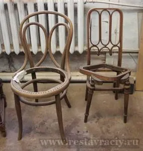
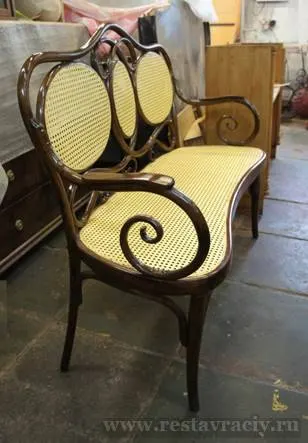
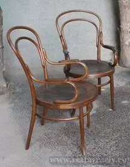
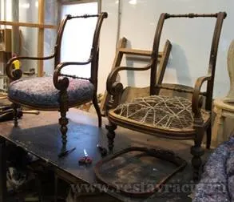
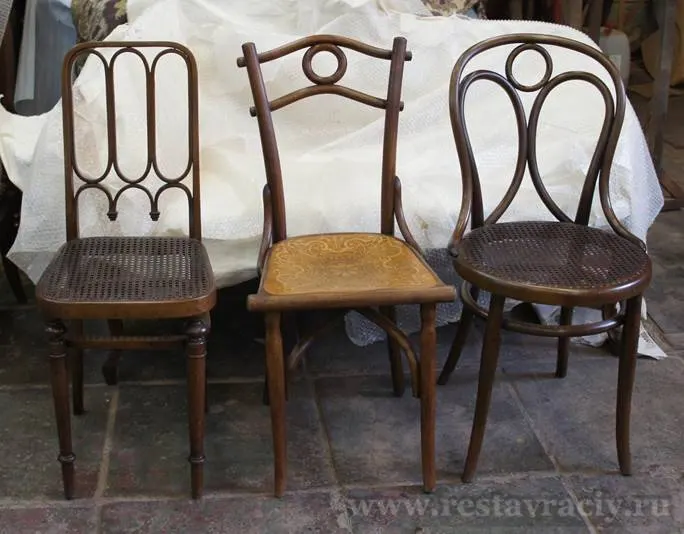

Библиотека
Венские стулья (стул венский)
На протяжении многих лет мы восстанавливаем деревянную мебель, в том числе и венские стулья.


О чём рассказывает мастерская
- Почему стулья Венские?
- Реставрация венских стульев
- Венская мебель
- Деревянные венские стулья
- История венского стула
- Венский мягкий стул
В материале мастерской
Фотографии и детали



Открыть снимок у мастерской


Открыть снимок у мастерской


Открыть снимок у мастерской


Открыть снимок у мастерской
Посмотреть снимки с сайта мастерской 1
Оригинальные фотографии откроются здесь с сайта мастерской.
 Открыть снимок у мастерской
Открыть снимок у мастерской Есть похожая вещь?
Подберите ракурсы для предварительной оценки.